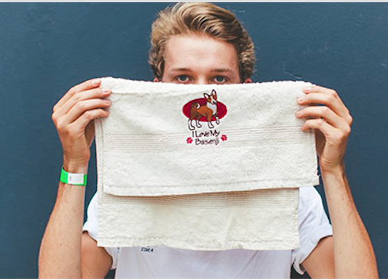

BASENJI
Basenji (born Sebastian Muecke) is an Electronic musician and DJ from Sydney, Australia. He initially gained popularity through the Triple J Unearthed competition. He was then signed to the record label future classic. in 2014, through which he released several singles and one EP.
FOLLOW THEM